(up to last 14 days)
Daily view
Last update: 05 Nov 2026, 23:27 CET
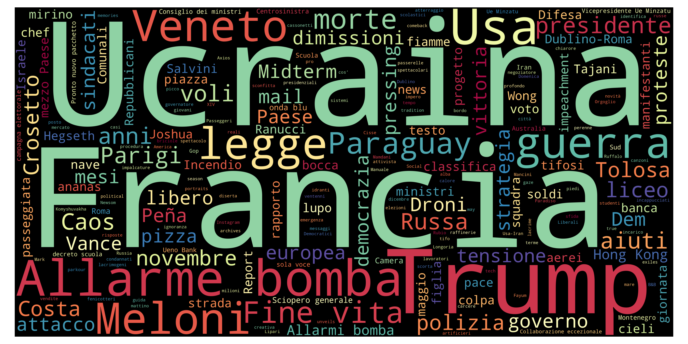
| Term | Frequency |
|---|---|
| francia | 10 |
| trump | 7 |
| meloni | 7 |
| usa | 7 |
| legge | 6 |
| anno | 6 |
| veneto | 6 |
| paraguay | 6 |
| ucraina | 6 |
| presidente | 5 |
| Term | Frequency |
|---|---|
| allarme bomba | 7 |
| fine vita | 6 |
| hong kong | 4 |
| allarmi bomba | 3 |
| mezzo paese | 2 |
| sciopero generale | 2 |
| onda blu | 2 |
| consiglio dei ministri | 2 |
| ueno bank | 2 |
| sola voce | 2 |
| Term | Current day frequency |
|---|---|
| allarme bomba | 7 |
| fine vita | 6 |
| paraguay | 6 |
| veneto | 6 |
| liceo | 5 |
| tolosa | 5 |
| parigi | 5 |
| caos | 5 |
| volo | 5 |
| hong kong | 4 |
| Term | Difference | Current day frequency | Previous day frequency |
|---|---|---|---|
| francia | 5 | 10 | 5 |
| aiuto | 4 | 5 | 1 |
| legge | 4 | 6 | 2 |
| russa | 4 | 5 | 1 |
| ucraina | 3 | 6 | 3 |
| anno | 3 | 6 | 3 |
| novembre | 2 | 4 | 2 |
| morto | 2 | 4 | 2 |
| europeo | 2 | 3 | 1 |
| centrosinistra | 1 | 2 | 1 |
| Term | Difference | Current day frequency | Previous day frequency |
|---|---|---|---|
| trump | -16 | 7 | 23 |
| sconfitta | -6 | 1 | 7 |
| usa | -6 | 7 | 13 |
| guerra | -6 | 5 | 11 |
| onda blu | -5 | 2 | 7 |
| mattarella | -3 | 1 | 4 |
| americano | -3 | 1 | 4 |
| democratico | -3 | 1 | 4 |
| primo | -3 | 1 | 4 |
| elezione | -2 | 2 | 4 |
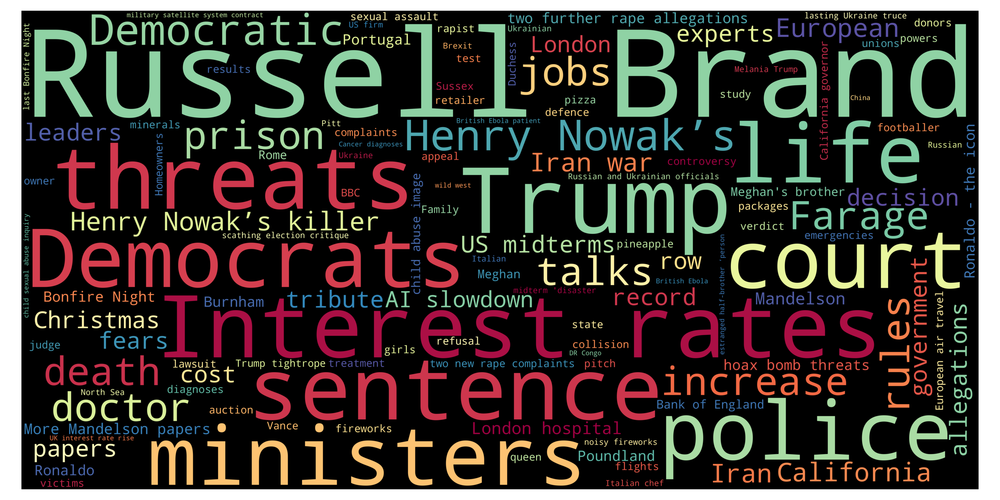
| Term | Frequency |
|---|---|
| trump | 7 |
| sentence | 6 |
| threat | 6 |
| police | 5 |
| court | 5 |
| life | 5 |
| minister | 5 |
| democratic | 5 |
| death | 4 |
| doctor | 4 |
| Term | Frequency |
|---|---|
| russell brand | 17 |
| interest rates | 6 |
| henry nowaks | 5 |
| henry nowak killer | 4 |
| iran war | 4 |
| us midterms | 3 |
| ai slowdown | 3 |
| london hospital | 3 |
| mandelson papers | 3 |
| rape allegations | 3 |
| Term | Current day frequency |
|---|---|
| russell brand | 17 |
| threat | 6 |
| sentence | 6 |
| interest rates | 6 |
| life | 5 |
| henry nowaks | 5 |
| court | 5 |
| doctor | 4 |
| job | 4 |
| european | 4 |
| Term | Difference | Current day frequency | Previous day frequency |
|---|---|---|---|
| minister | 4 | 5 | 1 |
| rule | 3 | 4 | 1 |
| democratic | 3 | 5 | 2 |
| increase | 3 | 4 | 1 |
| talk | 3 | 4 | 1 |
| police | 3 | 5 | 2 |
| farage | 3 | 4 | 1 |
| prison | 2 | 4 | 2 |
| allegation | 2 | 3 | 1 |
| paper | 2 | 3 | 1 |
| Term | Difference | Current day frequency | Previous day frequency |
|---|---|---|---|
| trump | -9 | 7 | 16 |
| burnham | -5 | 3 | 8 |
| democrats | -4 | 4 | 8 |
| republicans | -4 | 2 | 6 |
| government | -4 | 3 | 7 |
| cost | -4 | 3 | 7 |
| wife | -3 | 1 | 4 |
| russian | -2 | 2 | 4 |
| glass | -2 | 1 | 3 |
| iran | -2 | 4 | 6 |
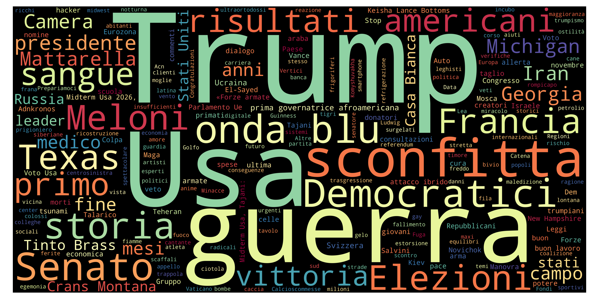
| Term | Frequency |
|---|---|
| trump | 23 |
| usa | 13 |
| guerra | 11 |
| sconfitta | 7 |
| senato | 7 |
| storia | 6 |
| meloni | 6 |
| francia | 5 |
| texas | 5 |
| americano | 4 |
| Term | Frequency |
|---|---|
| onda blu | 7 |
| tinto brass | 3 |
| stati uniti | 3 |
| casa bianca | 3 |
| governatrice afroamericana | 3 |
| attacco ibrido | 2 |
| new hampshire | 2 |
| buon lavoro | 2 |
| keisha lance bottoms | 2 |
| forze armate | 2 |
| Term | Current day frequency |
|---|---|
| onda blu | 7 |
| senato | 7 |
| sconfitta | 7 |
| meloni | 6 |
| francia | 5 |
| texas | 5 |
| presidente | 4 |
| camera | 4 |
| mattarella | 4 |
| sangue | 4 |
| Term | Difference | Current day frequency | Previous day frequency |
|---|---|---|---|
| trump | 12 | 23 | 11 |
| guerra | 5 | 11 | 6 |
| storia | 5 | 6 | 1 |
| vittoria | 3 | 4 | 1 |
| democratico | 3 | 4 | 1 |
| mese | 2 | 3 | 1 |
| usa | 2 | 13 | 11 |
| leader | 2 | 3 | 1 |
| medico | 2 | 3 | 1 |
| campo | 2 | 3 | 1 |
| Term | Difference | Current day frequency | Previous day frequency |
|---|---|---|---|
| seggio | -6 | 1 | 7 |
| voto | -4 | 2 | 6 |
| supermercato | -4 | 1 | 5 |
| milione | -3 | 1 | 4 |
| elezione | -2 | 4 | 6 |
| processo | -2 | 1 | 3 |
| scontro | -2 | 1 | 3 |
| israele | -2 | 2 | 4 |
| ucraina | -2 | 3 | 5 |
| europa | -2 | 1 | 3 |
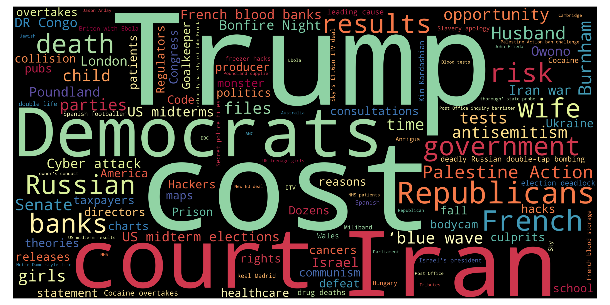
| Term | Frequency |
|---|---|
| trump | 16 |
| democrats | 8 |
| burnham | 8 |
| election | 7 |
| government | 7 |
| cost | 7 |
| iran | 6 |
| republicans | 6 |
| chart | 4 |
| map | 4 |
| Term | Frequency |
|---|---|
| palestine action | 5 |
| us midterm elections | 4 |
| dr congo | 3 |
| french blood banks | 3 |
| cyber attack | 3 |
| smart glasses | 3 |
| iran war | 3 |
| jason arday | 3 |
| post office | 3 |
| post office inquiry barrister | 3 |
| Term | Current day frequency |
|---|---|
| democrats | 8 |
| republicans | 6 |
| palestine action | 5 |
| map | 4 |
| chart | 4 |
| husband | 4 |
| death | 4 |
| french | 4 |
| iran war | 3 |
| smart glasses | 3 |
| Term | Difference | Current day frequency | Previous day frequency |
|---|---|---|---|
| trump | 9 | 16 | 7 |
| burnham | 6 | 8 | 2 |
| cost | 5 | 7 | 2 |
| government | 4 | 7 | 3 |
| bank | 3 | 4 | 1 |
| resident | 2 | 3 | 1 |
| us midterm elections | 2 | 4 | 2 |
| iran | 2 | 6 | 4 |
| glass | 2 | 3 | 1 |
| test | 2 | 3 | 1 |
| Term | Difference | Current day frequency | Previous day frequency |
|---|---|---|---|
| spanish | -3 | 2 | 5 |
| medium | -3 | 1 | 4 |
| rule | -2 | 1 | 3 |
| mogging | -2 | 1 | 3 |
| allegation | -2 | 1 | 3 |
| race | -2 | 1 | 3 |
| talk | -2 | 1 | 3 |
| freezer | -2 | 2 | 4 |
| brexit | -2 | 3 | 5 |
| ukraine | -2 | 2 | 4 |
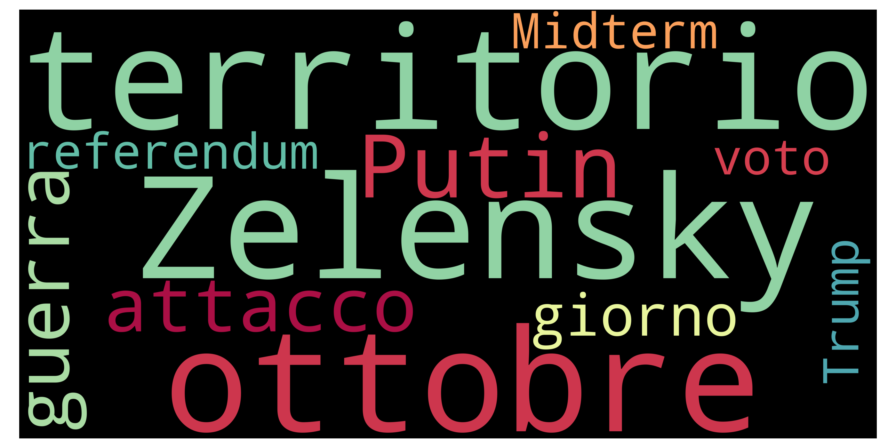
| Term | Frequency |
|---|---|
| trump | 11 |
| usa | 11 |
| seggio | 7 |
| elezione | 6 |
| guerra | 6 |
| voto | 6 |
| ministro | 5 |
| supermercato | 5 |
| ucraina | 5 |
| generale | 4 |
| Term | Frequency |
|---|---|
| elezioni midterm | 4 |
| primi seggi | 3 |
| caso garlasco | 2 |
| andrea sempio | 2 |
| midterm usa | 2 |
| nessun allarme | 2 |
| palazzo chigi | 2 |
| incidente ferroviario | 2 |
| falsi allarmi bomba | 2 |
| new york | 2 |
| Term | Current day frequency |
|---|---|
| ministro | 5 |
| generale | 4 |
| primo | 4 |
| elezioni midterm | 4 |
| israele | 4 |
| fiumicino | 3 |
| stato | 3 |
| primi seggi | 3 |
| risultato | 3 |
| emergenza | 3 |
| Term | Difference | Current day frequency | Previous day frequency |
|---|---|---|---|
| seggio | 5 | 7 | 2 |
| trump | 4 | 11 | 7 |
| elezione | 3 | 6 | 3 |
| guerra | 3 | 6 | 3 |
| taglio | 2 | 3 | 1 |
| processo | 2 | 3 | 1 |
| gas | 2 | 3 | 1 |
| astronauta | 2 | 3 | 1 |
| milione | 2 | 4 | 2 |
| ucraina | 2 | 5 | 3 |
| Term | Difference | Current day frequency | Previous day frequency |
|---|---|---|---|
| morto | -8 | 2 | 10 |
| europeo | -3 | 1 | 4 |
| anno | -3 | 2 | 5 |
| mondo | -3 | 1 | 4 |
| sistema | -3 | 1 | 4 |
| giro | -3 | 1 | 4 |
| democratico | -3 | 1 | 4 |
| vittima | -3 | 3 | 6 |
| genitore | -2 | 1 | 3 |
| attacco | -2 | 3 | 5 |
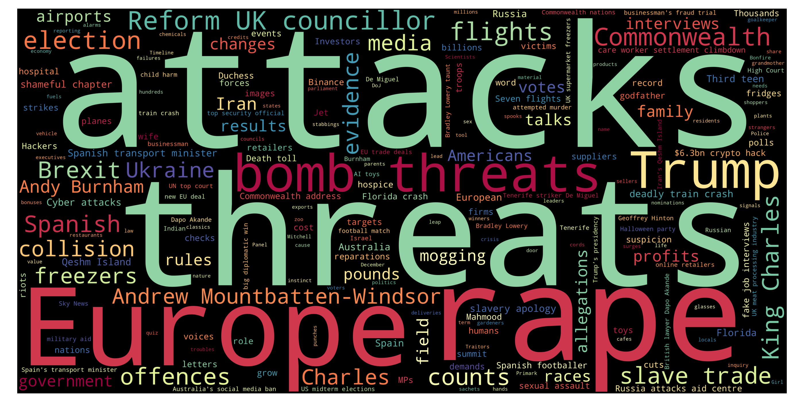
| Term | Frequency |
|---|---|
| attack | 11 |
| threat | 8 |
| rape | 7 |
| europe | 7 |
| trump | 7 |
| flight | 6 |
| election | 6 |
| commonwealth | 6 |
| offence | 5 |
| count | 5 |
| Term | Frequency |
|---|---|
| bomb threats | 7 |
| reform councillor | 7 |
| slave trade | 5 |
| king charles | 5 |
| andrew mountbatten windsor | 4 |
| andy burnham | 4 |
| spanish transport minister | 3 |
| deadly train crash | 3 |
| shameful chapter | 3 |
| third teen | 3 |
| Term | Current day frequency |
|---|---|
| threat | 8 |
| bomb threats | 7 |
| reform councillor | 7 |
| flight | 6 |
| count | 5 |
| spanish | 5 |
| king charles | 5 |
| slave trade | 5 |
| andrew mountbatten windsor | 4 |
| evidence | 4 |
| Term | Difference | Current day frequency | Previous day frequency |
|---|---|---|---|
| rape | 6 | 7 | 1 |
| trump | 6 | 7 | 1 |
| attack | 5 | 11 | 6 |
| europe | 4 | 7 | 3 |
| offence | 4 | 5 | 1 |
| commonwealth | 4 | 6 | 2 |
| brexit | 3 | 5 | 2 |
| iran | 2 | 4 | 2 |
| government | 2 | 3 | 1 |
| election | 2 | 6 | 4 |
| Term | Difference | Current day frequency | Previous day frequency |
|---|---|---|---|
| rule | -6 | 3 | 9 |
| burnham | -5 | 2 | 7 |
| poll | -4 | 2 | 6 |
| life | -3 | 1 | 4 |
| ukraine | -3 | 4 | 7 |
| country | -2 | 1 | 3 |
| florida | -2 | 3 | 5 |
| hacker | -2 | 2 | 4 |
| right | -2 | 1 | 3 |
| record | -2 | 2 | 4 |
| Term | Frequency |
|---|---|
| morto | 10 |
| usa | 10 |
| trump | 7 |
| supermercato | 6 |
| vittima | 6 |
| voto | 5 |
| attacco | 5 |
| anno | 5 |
| democratico | 4 |
| europeo | 4 |
| Term | Frequency |
|---|---|
| karl bushby | 4 |
| jet privato | 3 |
| studenti europei | 2 |
| almeno morti | 2 |
| nove morti | 2 |
| protezione civile | 2 |
| campo largo | 2 |
| regno unito | 2 |
| Term | Current day frequency |
|---|---|
| supermercato | 6 |
| vittima | 6 |
| giro | 4 |
| londra | 4 |
| karl bushby | 4 |
| sistema | 4 |
| democratico | 4 |
| hacker | 4 |
| mondo | 4 |
| piede | 3 |
| Term | Difference | Current day frequency | Previous day frequency |
|---|---|---|---|
| morto | 7 | 10 | 3 |
| usa | 5 | 10 | 5 |
| trump | 4 | 7 | 3 |
| attacco | 4 | 5 | 1 |
| tassa | 3 | 4 | 1 |
| europeo | 3 | 4 | 1 |
| mirino | 2 | 3 | 1 |
| michigan | 2 | 3 | 1 |
| militare | 2 | 3 | 1 |
| milione | 1 | 2 | 1 |
| Term | Difference | Current day frequency | Previous day frequency |
|---|---|---|---|
| euro | -5 | 2 | 7 |
| midterm | -3 | 3 | 6 |
| arabo | -3 | 1 | 4 |
| piano | -3 | 1 | 4 |
| meloni | -2 | 2 | 4 |
| elezione | -2 | 3 | 5 |
| governo | -2 | 1 | 3 |
| centrosinistra | -1 | 1 | 2 |
| presidente | -1 | 1 | 2 |
| treno | -1 | 1 | 2 |
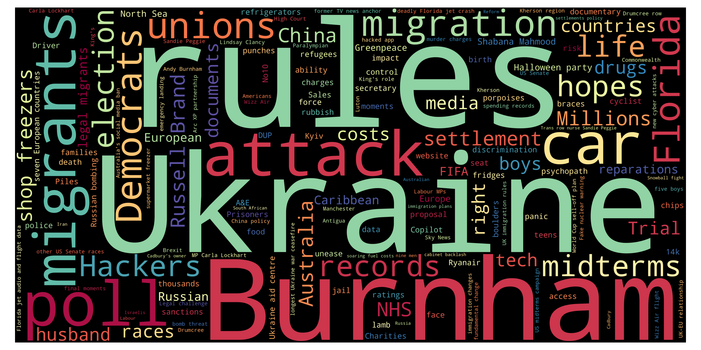
| Term | Frequency |
|---|---|
| rule | 9 |
| ukraine | 7 |
| burnham | 7 |
| attack | 6 |
| poll | 6 |
| car | 5 |
| migrant | 5 |
| migration | 5 |
| union | 5 |
| florida | 5 |
| Term | Frequency |
|---|---|
| shop freezers | 4 |
| russell brand | 4 |
| legal migrants | 3 |
| halloween party | 3 |
| north sea | 3 |
| shabana mahmood | 3 |
| seven european countries | 2 |
| ukraine aid centre | 2 |
| russian bombing | 2 |
| deadly florida jet crash | 2 |
| Term | Current day frequency |
|---|---|
| burnham | 7 |
| poll | 6 |
| attack | 6 |
| migration | 5 |
| car | 5 |
| union | 5 |
| democrats | 5 |
| florida | 5 |
| life | 4 |
| china | 4 |
| Term | Difference | Current day frequency | Previous day frequency |
|---|---|---|---|
| rule | 7 | 9 | 2 |
| ukraine | 4 | 7 | 3 |
| migrant | 3 | 5 | 2 |
| midterm | 3 | 4 | 1 |
| record | 3 | 4 | 1 |
| election | 2 | 4 | 2 |
| cost | 2 | 3 | 1 |
| teen | 1 | 2 | 1 |
| reform | 1 | 2 | 1 |
| europe | 1 | 3 | 2 |
| Term | Difference | Current day frequency | Previous day frequency |
|---|---|---|---|
| trump | -4 | 1 | 5 |
| apology | -3 | 1 | 4 |
| power | -2 | 1 | 3 |
| boy | -2 | 3 | 5 |
| thousand | -2 | 2 | 4 |
| activist | -2 | 1 | 3 |
| teenager | -2 | 1 | 3 |
| child | -1 | 1 | 2 |
| student | -1 | 1 | 2 |
| deal | -1 | 1 | 2 |
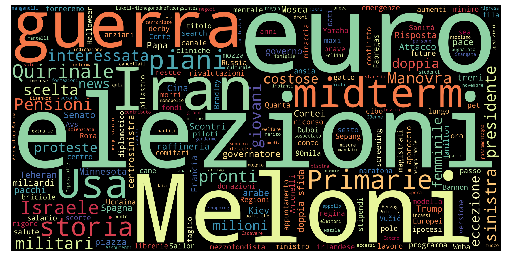
| Term | Frequency |
|---|---|
| euro | 7 |
| midterm | 6 |
| elezione | 5 |
| usa | 5 |
| iran | 5 |
| arabo | 4 |
| piano | 4 |
| voto | 4 |
| anno | 4 |
| meloni | 4 |
| Term | Frequency |
|---|---|
| stati uniti | 2 |
| doppia sfida | 2 |
| formazioni arabe | 2 |
| Term | Current day frequency |
|---|---|
| euro | 7 |
| piano | 4 |
| quirinale | 4 |
| marito | 3 |
| senato | 3 |
| pacco | 3 |
| notte | 3 |
| stipendio | 2 |
| teheran | 2 |
| arezzo | 2 |
| Term | Difference | Current day frequency | Previous day frequency |
|---|---|---|---|
| arabo | 3 | 4 | 1 |
| meloni | 3 | 4 | 1 |
| elezione | 3 | 5 | 2 |
| eisenkot | 2 | 3 | 1 |
| israele | 2 | 4 | 2 |
| risposta | 1 | 2 | 1 |
| sparatoria | 1 | 2 | 1 |
| pace | 1 | 2 | 1 |
| midterm | 1 | 6 | 5 |
| piazza | 1 | 2 | 1 |
| Term | Difference | Current day frequency | Previous day frequency |
|---|---|---|---|
| scontro | -12 | 1 | 13 |
| usa | -7 | 5 | 12 |
| protesta | -7 | 2 | 9 |
| francia | -5 | 2 | 7 |
| corteo | -4 | 1 | 5 |
| manovra | -4 | 2 | 6 |
| giovane | -4 | 2 | 6 |
| trump | -4 | 3 | 7 |
| anno | -3 | 4 | 7 |
| premier | -3 | 2 | 5 |
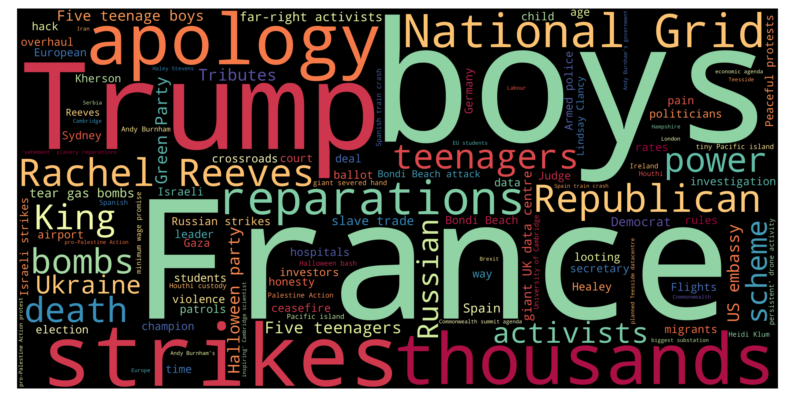
| Term | Frequency |
|---|---|
| boy | 5 |
| france | 5 |
| trump | 5 |
| strike | 4 |
| thousand | 4 |
| apology | 4 |
| reparation | 4 |
| republican | 4 |
| power | 3 |
| teenager | 3 |
| Term | Frequency |
|---|---|
| national grid | 4 |
| rachel reeves | 4 |
| five teenagers | 3 |
| halloween party | 3 |
| us embassy | 3 |
| green party | 3 |
| five teenage boys | 3 |
| far right activists | 3 |
| tear gas bombs | 3 |
| giant data centre | 3 |
| Term | Current day frequency |
|---|---|
| boy | 5 |
| strike | 4 |
| apology | 4 |
| national grid | 4 |
| republican | 4 |
| rachel reeves | 4 |
| activist | 3 |
| king | 3 |
| five teenage boys | 3 |
| giant data centre | 3 |
| Term | Difference | Current day frequency | Previous day frequency |
|---|---|---|---|
| reparation | 2 | 4 | 2 |
| thousand | 2 | 4 | 2 |
| spain | 1 | 3 | 2 |
| way | 1 | 2 | 1 |
| russian | 1 | 3 | 2 |
| deal | 1 | 2 | 1 |
| datum | 1 | 2 | 1 |
| france | 1 | 5 | 4 |
| ballot | 1 | 2 | 1 |
| rate | 1 | 2 | 1 |
| Term | Difference | Current day frequency | Previous day frequency |
|---|---|---|---|
| binance | -4 | 1 | 5 |
| election | -3 | 2 | 5 |
| london | -3 | 2 | 5 |
| candidate | -2 | 1 | 3 |
| europe | -2 | 2 | 4 |
| palestine action | -2 | 2 | 4 |
| vote | -2 | 1 | 3 |
| family | -1 | 1 | 2 |
| migrant | -1 | 2 | 3 |
| loss | -1 | 1 | 2 |
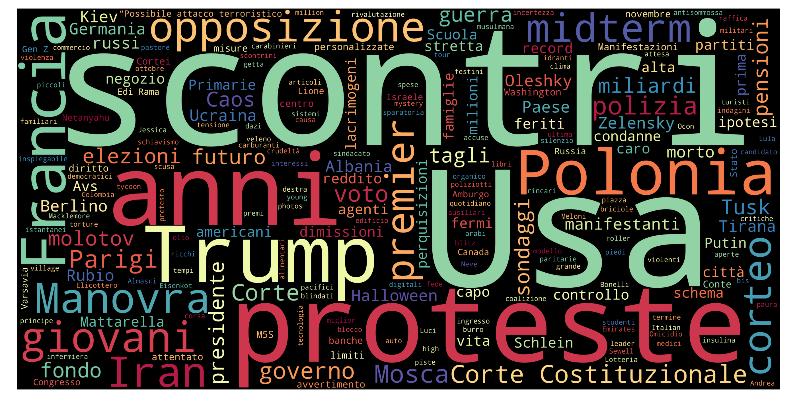
| Term | Frequency |
|---|---|
| scontro | 13 |
| usa | 12 |
| protesta | 9 |
| anno | 7 |
| trump | 7 |
| polonia | 7 |
| francia | 7 |
| opposizione | 6 |
| giovane | 6 |
| manovra | 6 |
| Term | Frequency |
|---|---|
| corte costituzionale | 5 |
| possibile attacco terroristico | 2 |
| gen z | 2 |
| edi rama | 2 |
| bricioe le | 1 |
| Term | Current day frequency |
|---|---|
| protesta | 9 |
| francia | 7 |
| polonia | 7 |
| giovane | 6 |
| corte costituzionale | 5 |
| parigi | 5 |
| corte | 4 |
| russo | 3 |
| germania | 3 |
| albania | 3 |
| Term | Difference | Current day frequency | Previous day frequency |
|---|---|---|---|
| scontro | 12 | 13 | 1 |
| usa | 6 | 12 | 6 |
| opposizione | 5 | 6 | 1 |
| premier | 4 | 5 | 1 |
| iran | 4 | 6 | 2 |
| mosca | 3 | 5 | 2 |
| anno | 3 | 7 | 4 |
| sondaggio | 2 | 3 | 1 |
| manovra | 2 | 6 | 4 |
| voto | 2 | 4 | 2 |
| Term | Difference | Current day frequency | Previous day frequency |
|---|---|---|---|
| meloni | -7 | 1 | 8 |
| elicottero | -6 | 1 | 7 |
| militare | -3 | 1 | 4 |
| elezione | -3 | 2 | 5 |
| primario | -3 | 1 | 4 |
| primo | -2 | 2 | 4 |
| israele | -2 | 2 | 4 |
| drone | -2 | 1 | 3 |
| posto | -2 | 1 | 3 |
| ucraina | -2 | 3 | 5 |
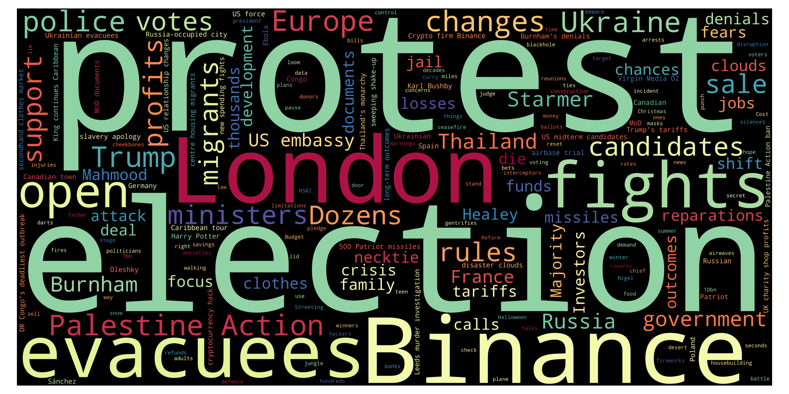
| Term | Frequency |
|---|---|
| police | 9 |
| election | 5 |
| binance | 5 |
| london | 5 |
| fight | 4 |
| open | 4 |
| change | 4 |
| evacuee | 4 |
| russia | 4 |
| europe | 4 |
| Term | Frequency |
|---|---|
| palestine action | 4 |
| us embassy | 3 |
| russia occupied frontline city | 2 |
| crypto firm binance | 2 |
| us midterm candidates | 2 |
| harry potter | 2 |
| thailand monarchy | 2 |
| canadian town | 2 |
| trump tariffs | 2 |
| burnham denials | 2 |
| Term | Current day frequency |
|---|---|
| election | 5 |
| london | 5 |
| france | 4 |
| evacuee | 4 |
| open | 4 |
| fight | 4 |
| europe | 4 |
| russia | 4 |
| thailand | 3 |
| vote | 3 |
| Term | Difference | Current day frequency | Previous day frequency |
|---|---|---|---|
| trump | 3 | 4 | 1 |
| change | 3 | 4 | 1 |
| ukraine | 2 | 4 | 2 |
| rule | 2 | 3 | 1 |
| sale | 1 | 2 | 1 |
| profit | 1 | 3 | 2 |
| fund | 1 | 2 | 1 |
| attack | 1 | 2 | 1 |
| mahmood | 1 | 2 | 1 |
| palestine action | 1 | 4 | 3 |
| Term | Difference | Current day frequency | Previous day frequency |
|---|---|---|---|
| russian | -9 | 2 | 11 |
| burnham | -7 | 3 | 10 |
| right | -2 | 1 | 3 |
| spain | -1 | 2 | 3 |
| oleshky | -1 | 2 | 3 |
| cost | -1 | 1 | 2 |
| hundred | -1 | 1 | 2 |
| budget | -1 | 1 | 2 |
| ballot | -1 | 1 | 2 |
| concern | -1 | 1 | 2 |
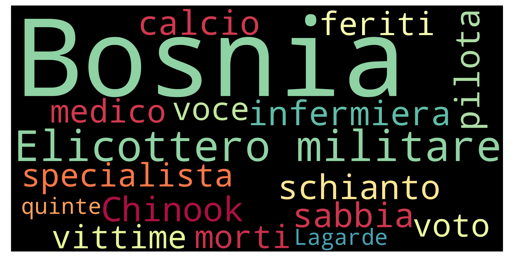
| Term | Frequency |
|---|---|
| bosnia | 10 |
| meloni | 8 |
| elicottero | 7 |
| usa | 6 |
| elezione | 5 |
| trump | 5 |
| ucraina | 5 |
| guerra | 4 |
| anno | 4 |
| polizia | 4 |
| Term | Frequency |
|---|---|
| campo largo | 4 |
| papa leone | 4 |
| christa pike | 2 |
| dolore costante | 2 |
| sciopero generale | 2 |
| primi hub tecnologici | 2 |
| quattro militari | 2 |
| Term | Current day frequency |
|---|---|
| elicottero | 7 |
| elezione | 5 |
| vittima | 4 |
| militare | 4 |
| primario | 4 |
| polizia | 4 |
| campo largo | 4 |
| papa leone | 4 |
| oleshky | 3 |
| irpef | 3 |
| Term | Difference | Current day frequency | Previous day frequency |
|---|---|---|---|
| meloni | 5 | 8 | 3 |
| usa | 4 | 6 | 2 |
| miliardo | 3 | 4 | 1 |
| trump | 3 | 5 | 2 |
| ucraina | 3 | 5 | 2 |
| città | 3 | 4 | 1 |
| primo | 2 | 4 | 2 |
| midterm | 2 | 3 | 1 |
| roma | 2 | 3 | 1 |
| anno | 2 | 4 | 2 |
| Term | Difference | Current day frequency | Previous day frequency |
|---|---|---|---|
| bce | -3 | 1 | 4 |
| morto | -3 | 3 | 6 |
| scontro | -3 | 1 | 4 |
| cortei | -2 | 1 | 3 |
| mese | -2 | 1 | 3 |
| misura | -2 | 1 | 3 |
| euro | -1 | 1 | 2 |
| novembre | -1 | 1 | 2 |
| politico | -1 | 1 | 2 |
| presidente | -1 | 1 | 2 |
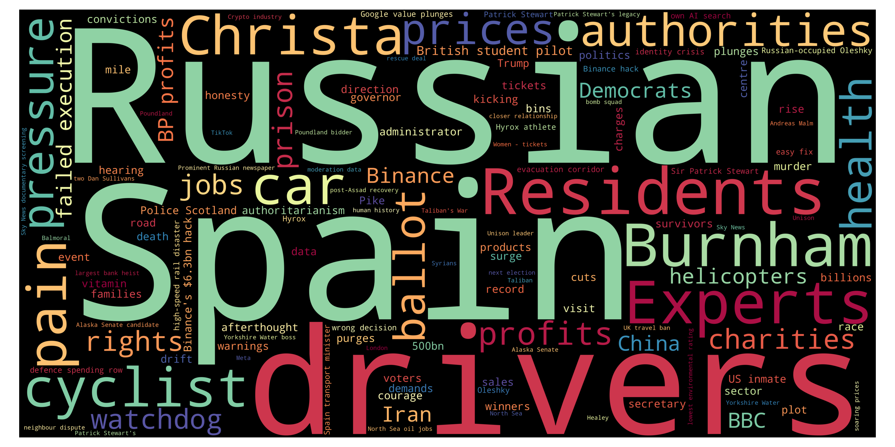
| Term | Frequency |
|---|---|
| russian | 11 |
| police | 10 |
| burnham | 10 |
| husband | 6 |
| cyclist | 5 |
| murder | 5 |
| binance | 5 |
| driver | 4 |
| protest | 4 |
| mile | 4 |
| Term | Frequency |
|---|---|
| north korea | 4 |
| russell brand | 4 |
| ai spending | 3 |
| us tech | 3 |
| russian minister | 3 |
| g family photo | 3 |
| neighbour dispute | 3 |
| bomb squad | 3 |
| top russian diplomat | 3 |
| g photocall | 3 |
| Term | Current day frequency |
|---|---|
| police | 10 |
| husband | 6 |
| binance | 5 |
| cyclist | 5 |
| driver | 4 |
| epstein | 4 |
| mile | 4 |
| russell brand | 4 |
| protest | 4 |
| north korea | 4 |
| Term | Difference | Current day frequency | Previous day frequency |
|---|---|---|---|
| russian | 7 | 11 | 4 |
| murder | 4 | 5 | 1 |
| burnham | 4 | 10 | 6 |
| power | 2 | 3 | 1 |
| expert | 2 | 3 | 1 |
| governor | 1 | 2 | 1 |
| price | 1 | 2 | 1 |
| midterm | 1 | 2 | 1 |
| child | 1 | 2 | 1 |
| purge | 1 | 2 | 1 |
| Term | Difference | Current day frequency | Previous day frequency |
|---|---|---|---|
| budget | -5 | 2 | 7 |
| rule | -4 | 1 | 5 |
| household | -3 | 1 | 4 |
| spain | -3 | 3 | 6 |
| question | -3 | 2 | 5 |
| netanyahu | -2 | 2 | 4 |
| job | -2 | 2 | 4 |
| meghan | -2 | 3 | 5 |
| poundland | -1 | 2 | 3 |
| 500bn | -1 | 1 | 2 |
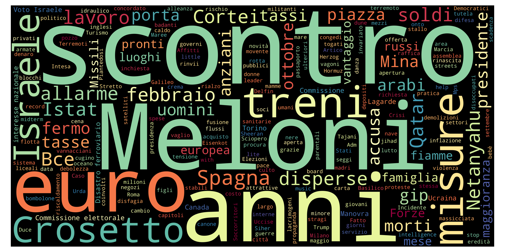
| Term | Frequency |
|---|---|
| bosnia | 8 |
| morto | 6 |
| pronto | 4 |
| scontro | 4 |
| treno | 4 |
| israele | 4 |
| bce | 4 |
| cortei | 3 |
| guerra | 3 |
| soldo | 3 |
| Term | Frequency |
|---|---|
| croce rossa | 2 |
| commissione elettorale | 2 |
| casa bianca | 2 |
| elicottero militare | 2 |
| disastro ferroviario | 2 |
| elicottero caduto | 2 |
| voto israele | 2 |
| Term | Current day frequency |
|---|---|
| bosnia | 8 |
| bce | 4 |
| qatar | 3 |
| mese | 3 |
| soldo | 3 |
| europa | 3 |
| cortei | 3 |
| febbraio | 3 |
| primo | 2 |
| grazie | 2 |
| Term | Difference | Current day frequency | Previous day frequency |
|---|---|---|---|
| pronto | 3 | 4 | 1 |
| morto | 2 | 6 | 4 |
| europeo | 1 | 2 | 1 |
| rosso | 1 | 2 | 1 |
| fiamma | 1 | 2 | 1 |
| novembre | 1 | 2 | 1 |
| luogo | 1 | 2 | 1 |
| russia | 1 | 2 | 1 |
| gip | 1 | 2 | 1 |
| guerra | 1 | 3 | 2 |
| Term | Difference | Current day frequency | Previous day frequency |
|---|---|---|---|
| spagna | -12 | 3 | 15 |
| israele | -11 | 4 | 15 |
| treno | -7 | 4 | 11 |
| meloni | -6 | 3 | 9 |
| scontro | -6 | 4 | 10 |
| netanyahu | -4 | 3 | 7 |
| arabo | -4 | 2 | 6 |
| bilancio | -4 | 1 | 5 |
| manovra | -3 | 2 | 5 |
| maggioranza | -3 | 2 | 5 |
| Term | Frequency |
|---|---|
| budget | 7 |
| burnham | 6 |
| spain | 6 |
| met | 5 |
| rule | 5 |
| chancellor | 5 |
| question | 5 |
| meghan | 5 |
| job | 4 |
| court | 4 |
| Term | Frequency |
|---|---|
| police watchdog | 5 |
| welfare bill | 4 |
| patrick stewart | 4 |
| meghan father | 3 |
| sir patrick stewart | 3 |
| next election | 3 |
| former church leader | 3 |
| living standards | 2 |
| spain train operators | 2 |
| deadly crash | 2 |
| Term | Current day frequency |
|---|---|
| burnham | 6 |
| met | 5 |
| police watchdog | 5 |
| meghan | 5 |
| job | 4 |
| russian | 4 |
| 4 | |
| patrick stewart | 4 |
| welfare bill | 4 |
| next election | 3 |
| Term | Difference | Current day frequency | Previous day frequency |
|---|---|---|---|
| chancellor | 4 | 5 | 1 |
| rule | 2 | 5 | 3 |
| plan | 2 | 3 | 1 |
| wife | 2 | 3 | 1 |
| hundred | 2 | 3 | 1 |
| allegation | 2 | 3 | 1 |
| medium | 2 | 3 | 1 |
| question | 2 | 5 | 3 |
| moment | 2 | 3 | 1 |
| alaska | 2 | 4 | 2 |
| Term | Difference | Current day frequency | Previous day frequency |
|---|---|---|---|
| budget | -13 | 7 | 20 |
| israel | -10 | 3 | 13 |
| court | -6 | 4 | 10 |
| trial | -5 | 2 | 7 |
| trump | -5 | 2 | 7 |
| share | -3 | 1 | 4 |
| expert | -3 | 1 | 4 |
| household | -3 | 4 | 7 |
| flávio bolsonaro | -3 | 2 | 5 |
| netanyahu | -3 | 4 | 7 |
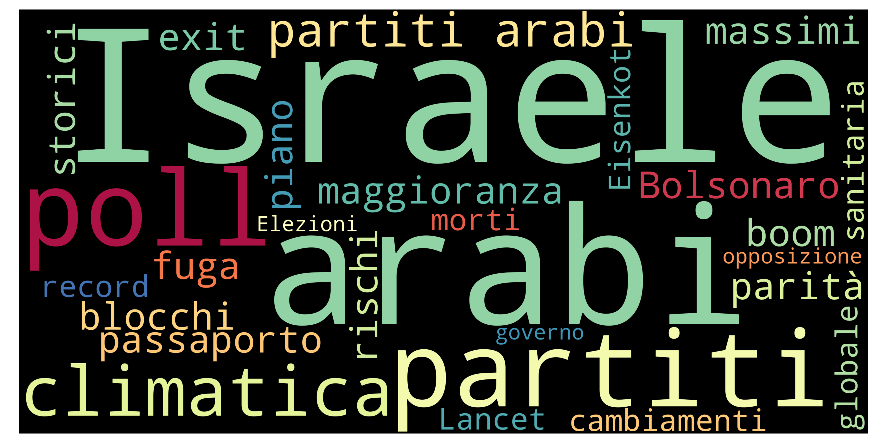
| Term | Frequency |
|---|---|
| spagna | 15 |
| israele | 15 |
| treno | 11 |
| scontro | 10 |
| meloni | 9 |
| libero | 7 |
| elezione | 7 |
| netanyahu | 7 |
| arabo | 6 |
| governo | 6 |
| Term | Frequency |
|---|---|
| via libera | 6 |
| flavio bolsonaro | 6 |
| mila euro | 4 |
| alta velocità | 3 |
| stati uniti | 3 |
| regno unito | 2 |
| youssef siher | 2 |
| ambasciata israeliana | 2 |
| jet privato | 2 |
| partiti arabi | 2 |
| Term | Current day frequency |
|---|---|
| spagna | 15 |
| treno | 11 |
| scontro | 10 |
| governo | 6 |
| via libera | 6 |
| flavio bolsonaro | 6 |
| vittima | 5 |
| toledo | 5 |
| mila euro | 4 |
| irpef | 4 |
| Term | Difference | Current day frequency | Previous day frequency |
|---|---|---|---|
| cdm | 5 | 6 | 1 |
| arabo | 5 | 6 | 1 |
| libero | 5 | 7 | 2 |
| maggioranza | 4 | 5 | 1 |
| bilancio | 4 | 5 | 1 |
| meloni | 4 | 9 | 5 |
| disperso | 3 | 4 | 1 |
| legge | 3 | 4 | 1 |
| alto | 3 | 4 | 1 |
| opposizione | 3 | 4 | 1 |
| Term | Difference | Current day frequency | Previous day frequency |
|---|---|---|---|
| brasile | -6 | 3 | 9 |
| putin | -4 | 1 | 5 |
| elezione | -2 | 7 | 9 |
| pensione | -2 | 2 | 4 |
| punto | -2 | 1 | 3 |
| poll | -2 | 1 | 3 |
| fondo | -1 | 1 | 2 |
| famiglia | -1 | 3 | 4 |
| salvini | -1 | 2 | 3 |
| israele | -1 | 15 | 16 |
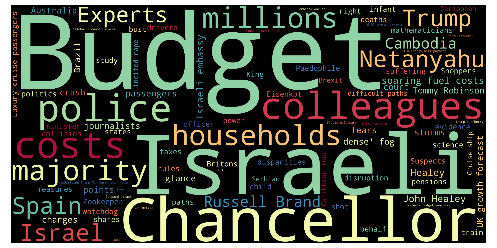
| Term | Frequency |
|---|---|
| budget | 20 |
| israel | 13 |
| court | 10 |
| bill | 7 |
| cost | 7 |
| trial | 7 |
| household | 7 |
| spain | 7 |
| netanyahu | 7 |
| trump | 7 |
| Term | Frequency |
|---|---|
| flávio bolsonaro | 5 |
| tommy robinson | 5 |
| russell brand | 5 |
| energy bills | 4 |
| bank tax | 4 |
| soaring fuel costs | 4 |
| nigel farage | 4 |
| andy burnham | 4 |
| netanyahu bloc | 3 |
| israel election | 3 |
| Term | Current day frequency |
|---|---|
| court | 10 |
| spain | 7 |
| netanyahu | 7 |
| passenger | 6 |
| miami | 5 |
| tommy robinson | 5 |
| soaring fuel costs | 4 |
| point | 4 |
| share | 4 |
| andy burnham | 4 |
| Term | Difference | Current day frequency | Previous day frequency |
|---|---|---|---|
| budget | 12 | 20 | 8 |
| trial | 6 | 7 | 1 |
| israel | 6 | 13 | 7 |
| bill | 6 | 7 | 1 |
| household | 6 | 7 | 1 |
| cost | 6 | 7 | 1 |
| fear | 4 | 5 | 1 |
| journalist | 4 | 5 | 1 |
| majority | 4 | 5 | 1 |
| trump | 3 | 7 | 4 |
| Term | Difference | Current day frequency | Previous day frequency |
|---|---|---|---|
| poll | -4 | 1 | 5 |
| leader | -4 | 1 | 5 |
| putin | -3 | 2 | 5 |
| thousand | -2 | 1 | 3 |
| police | -2 | 4 | 6 |
| brother | -2 | 1 | 3 |
| emergency | -2 | 1 | 3 |
| hundred | -1 | 1 | 2 |
| talk | -1 | 2 | 3 |
| sale | -1 | 1 | 2 |
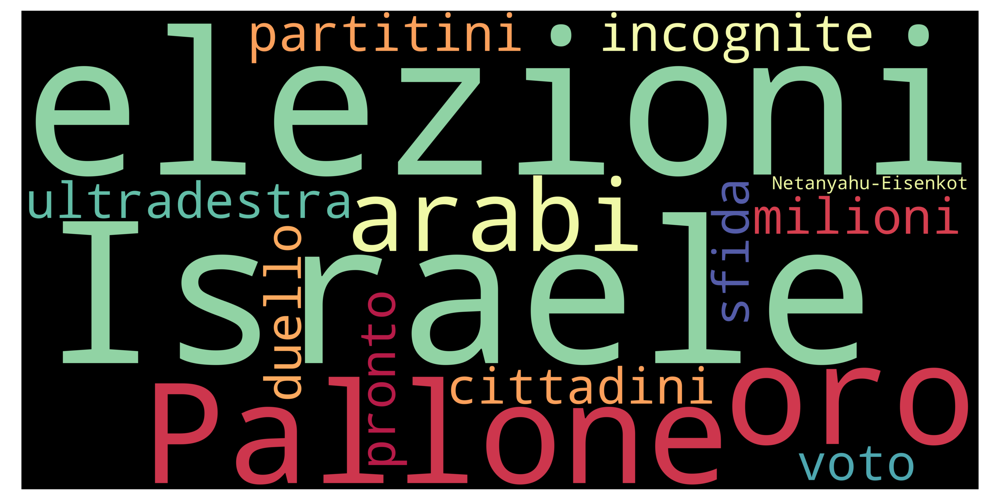
| Term | Frequency |
|---|---|
| israele | 16 |
| elezione | 9 |
| brasile | 9 |
| netanyahu | 6 |
| meloni | 5 |
| midterm | 5 |
| trump | 5 |
| putin | 5 |
| camera | 5 |
| usa | 5 |
| Term | Frequency |
|---|---|
| palazzo chigi | 3 |
| campo largo | 3 |
| bollo auto | 2 |
| youssef siher | 2 |
| ordine sparso | 2 |
| Term | Current day frequency |
|---|---|
| putin | 5 |
| camera | 5 |
| pensione | 4 |
| aperto | 4 |
| famiglia | 4 |
| testa | 4 |
| conte | 3 |
| poll | 3 |
| palazzo chigi | 3 |
| campo largo | 3 |
| Term | Difference | Current day frequency | Previous day frequency |
|---|---|---|---|
| israele | 8 | 16 | 8 |
| elezione | 4 | 9 | 5 |
| midterm | 2 | 5 | 3 |
| democratico | 2 | 3 | 1 |
| paese | 2 | 3 | 1 |
| partito | 2 | 3 | 1 |
| manovra | 2 | 3 | 1 |
| milione | 2 | 3 | 1 |
| politico | 1 | 2 | 1 |
| futuro | 1 | 2 | 1 |
| Term | Difference | Current day frequency | Previous day frequency |
|---|---|---|---|
| lula | -11 | 2 | 13 |
| trump | -9 | 5 | 14 |
| studente | -4 | 1 | 5 |
| presidente | -4 | 2 | 6 |
| voto | -2 | 4 | 6 |
| sfida | -2 | 2 | 4 |
| giorno | -2 | 1 | 3 |
| netanyahu | -2 | 6 | 8 |
| ucraina | -2 | 4 | 6 |
| via | -2 | 1 | 3 |
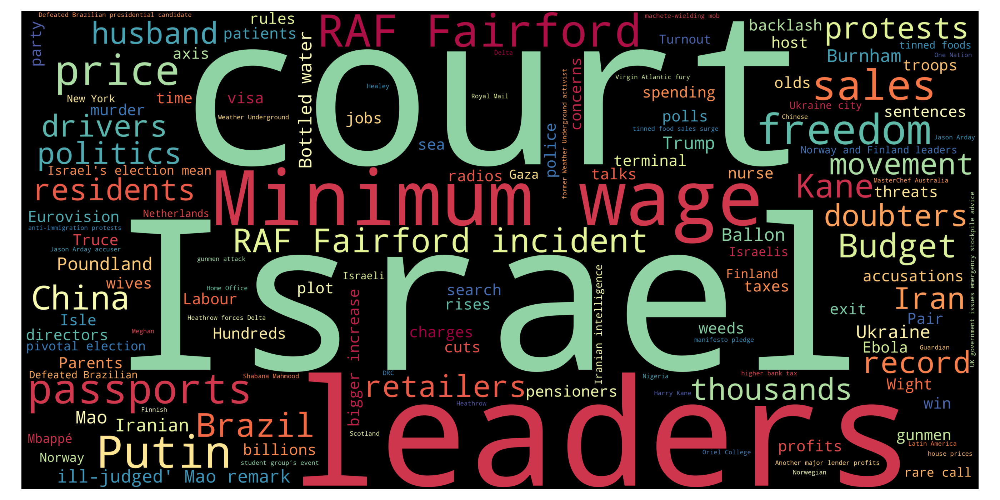
| Term | Frequency |
|---|---|
| budget | 8 |
| israel | 7 |
| police | 6 |
| brazil | 6 |
| leader | 5 |
| poll | 5 |
| price | 5 |
| putin | 5 |
| parent | 4 |
| mao | 4 |
| Term | Frequency |
|---|---|
| minimum wage | 4 |
| raf fairford | 4 |
| russell brand | 4 |
| chris mason | 3 |
| wayne couzens | 3 |
| exit polls | 3 |
| bigger increase | 2 |
| pm promises | 2 |
| ukraine kherson region | 2 |
| norway finland leaders | 2 |
| Term | Current day frequency |
|---|---|
| police | 6 |
| putin | 5 |
| raf fairford | 4 |
| minimum wage | 4 |
| mao | 4 |
| parent | 4 |
| movement | 3 |
| chris mason | 3 |
| protest | 3 |
| wayne couzens | 3 |
| Term | Difference | Current day frequency | Previous day frequency |
|---|---|---|---|
| israel | 5 | 7 | 2 |
| budget | 3 | 8 | 5 |
| price | 3 | 5 | 2 |
| emergency | 2 | 3 | 1 |
| nigeria | 2 | 4 | 2 |
| rise | 2 | 3 | 1 |
| talk | 2 | 3 | 1 |
| cell | 1 | 2 | 1 |
| troop | 1 | 2 | 1 |
| taxis | 1 | 2 | 1 |
| Term | Difference | Current day frequency | Previous day frequency |
|---|---|---|---|
| brazil | -5 | 6 | 11 |
| murder | -4 | 1 | 5 |
| november | -4 | 2 | 6 |
| wind | -4 | 1 | 5 |
| mother | -3 | 1 | 4 |
| ballon | -3 | 2 | 5 |
| trial | -3 | 1 | 4 |
| politic | -2 | 1 | 3 |
| london | -2 | 3 | 5 |
| doctor | -2 | 1 | 3 |
| Term | Frequency |
|---|---|
| trump | 14 |
| lula | 13 |
| brasile | 9 |
| netanyahu | 8 |
| israele | 8 |
| voto | 6 |
| presidente | 6 |
| ucraina | 6 |
| studente | 5 |
| elezione | 5 |
| Term | Frequency |
|---|---|
| youssef siher | 3 |
| ex ilva | 2 |
| nicki minaj | 2 |
| presto svolta | 2 |
| Term | Current day frequency |
|---|---|
| studente | 5 |
| elezione | 5 |
| midterm | 3 |
| israeliano | 3 |
| protesta | 3 |
| vittoria | 3 |
| giorno | 3 |
| via | 3 |
| giovane | 3 |
| youssef siher | 3 |
| Term | Difference | Current day frequency | Previous day frequency |
|---|---|---|---|
| trump | 10 | 14 | 4 |
| lula | 9 | 13 | 4 |
| brasile | 4 | 9 | 5 |
| israele | 4 | 8 | 4 |
| presidente | 3 | 6 | 3 |
| carcere | 2 | 3 | 1 |
| ucraina | 2 | 6 | 4 |
| premier | 2 | 3 | 1 |
| serbia | 2 | 5 | 3 |
| meloni | 2 | 4 | 2 |
| Term | Difference | Current day frequency | Previous day frequency |
|---|---|---|---|
| lega | -7 | 2 | 9 |
| voto | -4 | 6 | 10 |
| salvini | -4 | 3 | 7 |
| segretario | -3 | 2 | 5 |
| elezioni | -3 | 1 | 4 |
| piazza | -2 | 1 | 3 |
| sfida | -2 | 4 | 6 |
| politica | -2 | 1 | 3 |
| iran | -2 | 1 | 3 |
| stop | -2 | 1 | 3 |
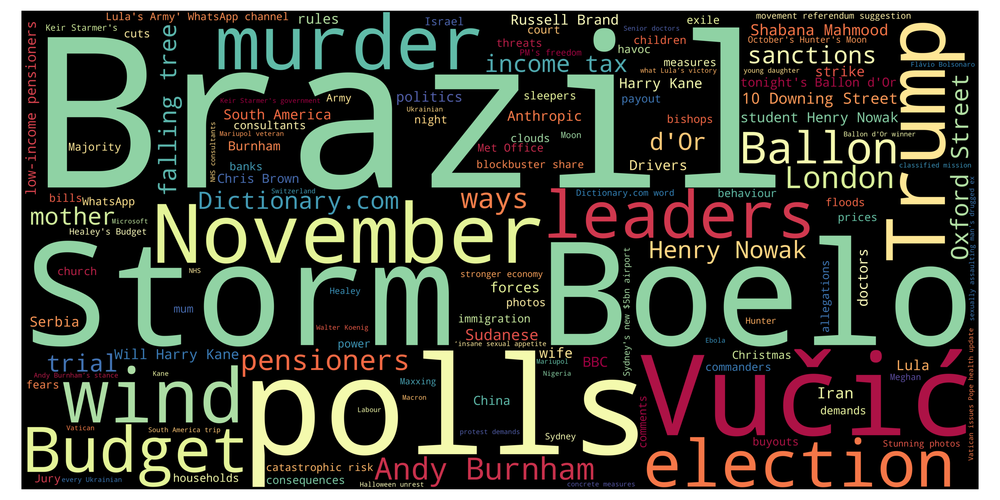
| Term | Frequency |
|---|---|
| brazil | 11 |
| poll | 6 |
| november | 6 |
| trump | 6 |
| murder | 5 |
| wind | 5 |
| election | 5 |
| leader | 5 |
| budget | 5 |
| ballon | 5 |
| Term | Frequency |
|---|---|
| storm boelo | 7 |
| andy burnham | 5 |
| henry nowak | 4 |
| oxford street | 4 |
| income tax | 4 |
| falling tree | 4 |
| shabana mahmood | 4 |
| student henry nowak | 3 |
| income pensioners | 3 |
| vu i | 3 |
| Term | Current day frequency |
|---|---|
| storm boelo | 7 |
| november | 6 |
| andy burnham | 5 |
| ballon | 5 |
| iran | 4 |
| d'or | 4 |
| falling tree | 4 |
| sanction | 4 |
| oxford street | 4 |
| shabana mahmood | 4 |
| Term | Difference | Current day frequency | Previous day frequency |
|---|---|---|---|
| brazil | 9 | 11 | 2 |
| poll | 4 | 6 | 2 |
| murder | 4 | 5 | 1 |
| wind | 3 | 5 | 2 |
| mother | 3 | 4 | 1 |
| trial | 3 | 4 | 1 |
| london | 2 | 5 | 3 |
| wife | 2 | 3 | 1 |
| rule | 2 | 3 | 1 |
| bbc | 2 | 3 | 1 |
| Term | Difference | Current day frequency | Previous day frequency |
|---|---|---|---|
| burnham | -8 | 3 | 11 |
| shooting | -4 | 1 | 5 |
| leader | -3 | 5 | 8 |
| power | -3 | 2 | 5 |
| serbia | -2 | 3 | 5 |
| funding | -2 | 1 | 3 |
| face | -2 | 1 | 3 |
| service | -2 | 1 | 3 |
| son | -2 | 1 | 3 |
| money | -2 | 1 | 3 |
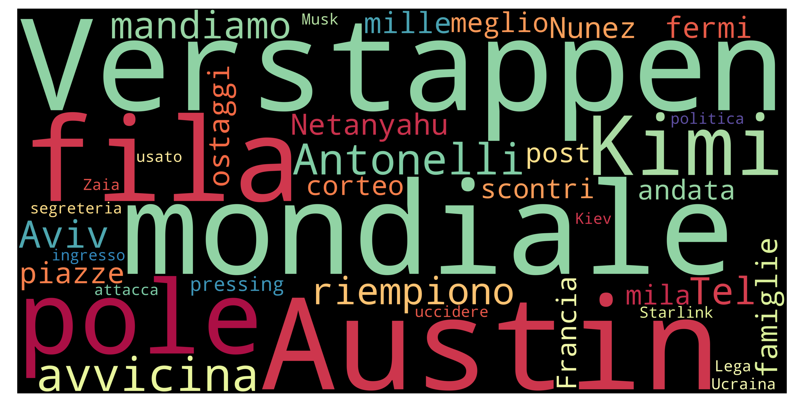
| Term | Frequency |
|---|---|
| voto | 10 |
| lega | 9 |
| netanyahu | 8 |
| salvini | 7 |
| sfida | 6 |
| siher | 5 |
| garavaglia | 5 |
| segretario | 5 |
| ottobre | 5 |
| brasile | 5 |
No phrases found for this day.
| Term | Current day frequency |
|---|---|
| netanyahu | 8 |
| segretario | 5 |
| siher | 5 |
| mattarella | 4 |
| israele | 4 |
| studenti | 4 |
| schlein | 4 |
| voti | 4 |
| youssef | 4 |
| affluenza | 3 |
| Term | Difference | Current day frequency | Previous day frequency |
|---|---|---|---|
| lega | 6 | 9 | 3 |
| voto | 5 | 10 | 5 |
| sfida | 4 | 6 | 2 |
| lula | 3 | 4 | 1 |
| trump | 3 | 4 | 1 |
| salvini | 3 | 7 | 4 |
| ucraina | 2 | 4 | 2 |
| roma | 2 | 3 | 1 |
| stop | 2 | 3 | 1 |
| elezioni | 2 | 4 | 2 |
| Term | Difference | Current day frequency | Previous day frequency |
|---|---|---|---|
| francia | -4 | 5 | 9 |
| scontro | -4 | 1 | 5 |
| anno | -3 | 2 | 5 |
| corteo | -2 | 1 | 3 |
| movimento | -2 | 2 | 4 |
| cisgiordania | -2 | 2 | 4 |
| piazze | -1 | 1 | 2 |
| accusato | -1 | 1 | 2 |
| ottobre | -1 | 5 | 6 |
| attentato | -1 | 1 | 2 |
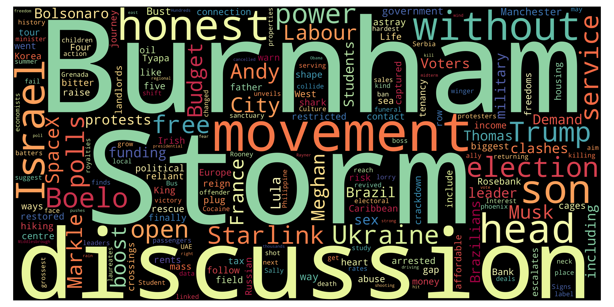
| Term | Frequency |
|---|---|
| burnham | 11 |
| storm | 9 |
| movement | 8 |
| leader | 8 |
| ukraine | 7 |
| discussion | 6 |
| honest | 6 |
| opposition | 6 |
| boelo | 6 |
| election | 6 |
No phrases found for this day.
| Term | Current day frequency |
|---|---|
| storm | 9 |
| movement | 8 |
| boelo | 6 |
| discussion | 6 |
| opposition | 6 |
| honest | 6 |
| without | 5 |
| trump | 5 |
| andy | 5 |
| serbia | 5 |
| Term | Difference | Current day frequency | Previous day frequency |
|---|---|---|---|
| burnham | 9 | 11 | 2 |
| leader | 7 | 8 | 1 |
| election | 5 | 6 | 1 |
| boost | 4 | 5 | 1 |
| power | 4 | 5 | 1 |
| funding | 2 | 3 | 1 |
| office | 1 | 2 | 1 |
| centre | 1 | 2 | 1 |
| way | 1 | 3 | 2 |
| diagnosis | 1 | 2 | 1 |
| Term | Difference | Current day frequency | Previous day frequency |
|---|---|---|---|
| bahamas | -5 | 2 | 7 |
| price | -4 | 1 | 5 |
| son | -4 | 3 | 7 |
| france | -3 | 3 | 6 |
| meghan | -2 | 3 | 5 |
| hebron | -2 | 1 | 3 |
| family | -2 | 1 | 3 |
| protest | -2 | 2 | 4 |
| healey | -2 | 1 | 3 |
| israeli | -2 | 1 | 3 |
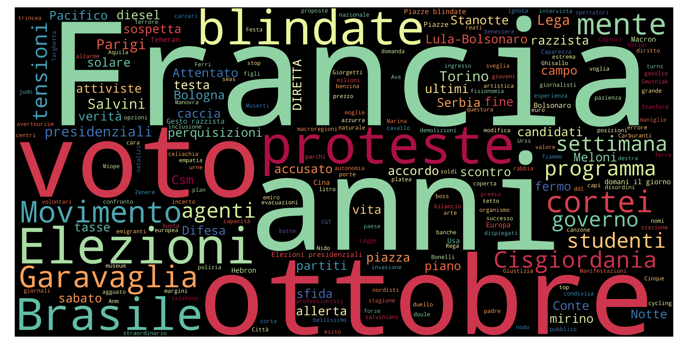
| Term | Frequency |
|---|---|
| francia | 9 |
| ottobre | 6 |
| anno | 5 |
| voto | 5 |
| protesta | 5 |
| scontro | 5 |
| brasile | 5 |
| garavaglia | 4 |
| movimento | 4 |
| salvini | 4 |
| Term | Frequency |
|---|---|
| domani giorno | 2 |
| elezioni presidenziali | 2 |
| gesto razzista | 2 |
| piazze blindate | 2 |
| Term | Current day frequency |
|---|---|
| scontro | 5 |
| brasile | 5 |
| voto | 5 |
| garavaglia | 4 |
| movimento | 4 |
| presidenziale | 3 |
| torino | 3 |
| elezione | 3 |
| studente | 3 |
| manifestante | 3 |
| Term | Difference | Current day frequency | Previous day frequency |
|---|---|---|---|
| francia | 5 | 9 | 4 |
| protesta | 3 | 5 | 2 |
| salvini | 3 | 4 | 1 |
| programma | 2 | 3 | 1 |
| ottobre | 2 | 6 | 4 |
| lega | 2 | 3 | 1 |
| settimana | 2 | 3 | 1 |
| blindato | 2 | 3 | 1 |
| diretta | 1 | 2 | 1 |
| allerto | 1 | 2 | 1 |
| Term | Difference | Current day frequency | Previous day frequency |
|---|---|---|---|
| meloni | -4 | 2 | 6 |
| ucraina | -3 | 2 | 5 |
| ferito | -3 | 1 | 4 |
| guerra | -3 | 2 | 5 |
| anno | -2 | 5 | 7 |
| social | -2 | 1 | 3 |
| macron | -2 | 2 | 4 |
| oleshky | -2 | 3 | 5 |
| governo | -2 | 2 | 4 |
| famiglia | -1 | 1 | 2 |
| Term | Frequency |
|---|---|
| ukraine | 8 |
| son | 7 |
| fire | 7 |
| bahamas | 7 |
| france | 6 |
| force | 5 |
| price | 5 |
| meghan | 5 |
| eagle | 5 |
| hitler | 5 |
| Term | Frequency |
|---|---|
| meghan father | 6 |
| storm boelo | 5 |
| sam fender | 3 |
| ticket prices | 3 |
| hitler eagle nest retreat | 3 |
| heavy rain | 3 |
| hundreds thousands | 3 |
| thomas markle | 3 |
| met police | 2 |
| law enforcement | 2 |
| Term | Current day frequency |
|---|---|
| bahamas | 7 |
| hitler | 5 |
| eagle | 5 |
| storm boelo | 5 |
| hitler eagle nest retreat | 3 |
| prisoner | 3 |
| healey | 3 |
| suspect | 3 |
| family | 3 |
| child | 3 |
| Term | Difference | Current day frequency | Previous day frequency |
|---|---|---|---|
| fire | 6 | 7 | 1 |
| son | 6 | 7 | 1 |
| price | 4 | 5 | 1 |
| france | 4 | 6 | 2 |
| force | 3 | 5 | 2 |
| meghan father | 3 | 6 | 3 |
| protest | 3 | 4 | 1 |
| starlink | 2 | 3 | 1 |
| thousand | 2 | 4 | 2 |
| ukraine | 2 | 8 | 6 |
| Term | Difference | Current day frequency | Previous day frequency |
|---|---|---|---|
| soldier | -4 | 1 | 5 |
| allegation | -4 | 4 | 8 |
| burnham | -4 | 2 | 6 |
| gunman | -3 | 1 | 4 |
| voter | -2 | 1 | 3 |
| power | -2 | 1 | 3 |
| fear | -2 | 1 | 3 |
| wind | -2 | 1 | 3 |
| wife | -1 | 1 | 2 |
| murder | -1 | 2 | 3 |
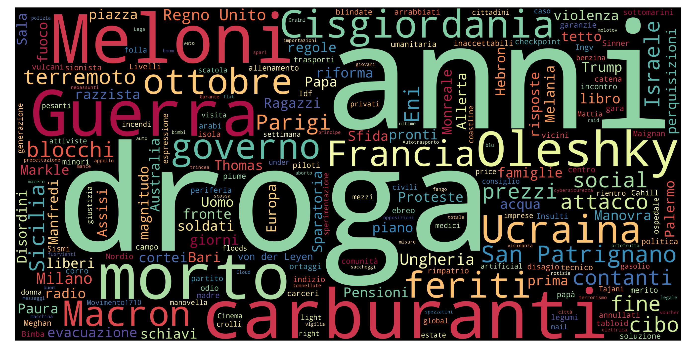
| Term | Frequency |
|---|---|
| anno | 7 |
| droga | 7 |
| meloni | 6 |
| guerra | 5 |
| morto | 5 |
| oleshky | 5 |
| cisgiordania | 5 |
| ucraina | 5 |
| carburante | 4 |
| ferito | 4 |
| Term | Frequency |
|---|---|
| san patrignano | 4 |
| regno unito | 3 |
| von der leyen | 2 |
| Term | Current day frequency |
|---|---|
| droga | 7 |
| oleshky | 5 |
| ferito | 4 |
| san patrignano | 4 |
| parigi | 3 |
| sicilia | 3 |
| eni | 3 |
| regno unito | 3 |
| terremoto | 3 |
| contante | 3 |
| Term | Difference | Current day frequency | Previous day frequency |
|---|---|---|---|
| morto | 4 | 5 | 1 |
| social | 2 | 3 | 1 |
| prezzo | 2 | 3 | 1 |
| fine | 2 | 3 | 1 |
| attacco | 2 | 3 | 1 |
| meloni | 1 | 6 | 5 |
| magnitudo | 1 | 2 | 1 |
| risposta | 1 | 2 | 1 |
| ottobre | 1 | 4 | 3 |
| fronte | 1 | 2 | 1 |
| Term | Difference | Current day frequency | Previous day frequency |
|---|---|---|---|
| protesta | -6 | 2 | 8 |
| mattarella | -4 | 1 | 5 |
| milano | -4 | 3 | 7 |
| guerra | -3 | 5 | 8 |
| nordio | -2 | 1 | 3 |
| minore | -2 | 1 | 3 |
| governo | -2 | 4 | 6 |
| giovane | -2 | 1 | 3 |
| carcere | -2 | 1 | 3 |
| anno | -1 | 7 | 8 |
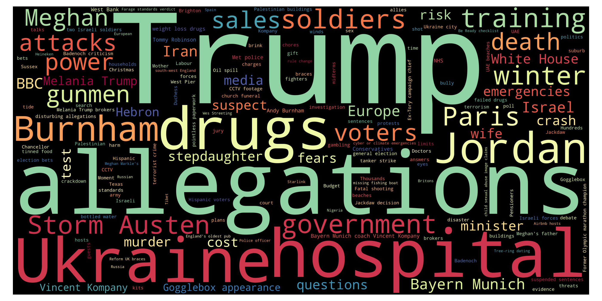
| Term | Frequency |
|---|---|
| allegation | 8 |
| hospital | 7 |
| trump | 7 |
| drug | 6 |
| paris | 6 |
| ukraine | 6 |
| jordan | 6 |
| burnham | 6 |
| soldier | 5 |
| government | 5 |
| Term | Frequency |
|---|---|
| storm austen | 6 |
| bayern munich | 4 |
| andy burnham | 4 |
| melania trump | 3 |
| white house | 3 |
| meghan father | 3 |
| vincent kompany | 3 |
| bayern munich training | 3 |
| tommy robinson | 3 |
| weight loss drugs | 3 |
| Term | Current day frequency |
|---|---|
| jordan | 6 |
| paris | 6 |
| burnham | 6 |
| meghan | 5 |
| macron | 5 |
| soldier | 5 |
| bayern munich | 4 |
| iran | 4 |
| gunman | 4 |
| medium | 3 |
| Term | Difference | Current day frequency | Previous day frequency |
|---|---|---|---|
| allegation | 7 | 8 | 1 |
| hospital | 6 | 7 | 1 |
| drug | 5 | 6 | 1 |
| storm austen | 4 | 6 | 2 |
| sale | 3 | 4 | 1 |
| winter | 3 | 5 | 2 |
| ukraine | 3 | 6 | 3 |
| stepdaughter | 2 | 3 | 1 |
| israel | 2 | 4 | 2 |
| hundred | 1 | 2 | 1 |
| Term | Difference | Current day frequency | Previous day frequency |
|---|---|---|---|
| police officer | -6 | 2 | 8 |
| service | -4 | 1 | 5 |
| government | -4 | 5 | 9 |
| court | -4 | 2 | 6 |
| france | -4 | 2 | 6 |
| car | -3 | 1 | 4 |
| russia | -3 | 2 | 5 |
| patient | -2 | 1 | 3 |
| europe | -2 | 2 | 4 |
| evidence | -2 | 1 | 3 |